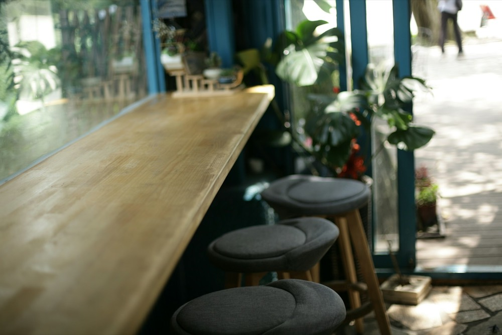
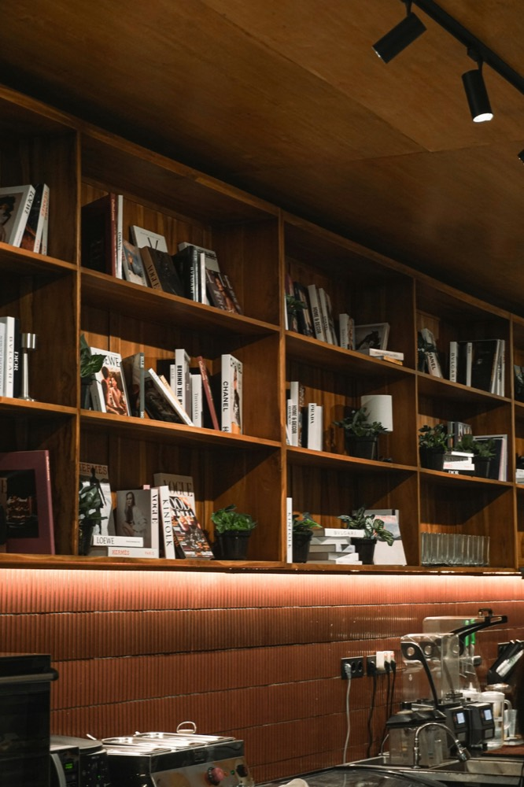
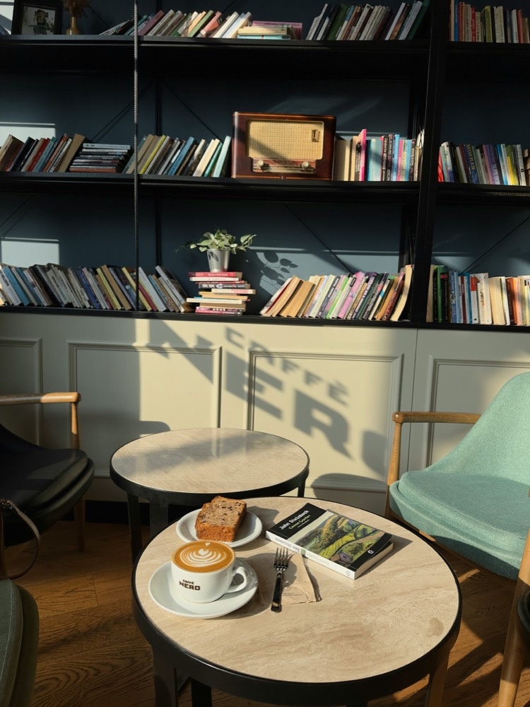
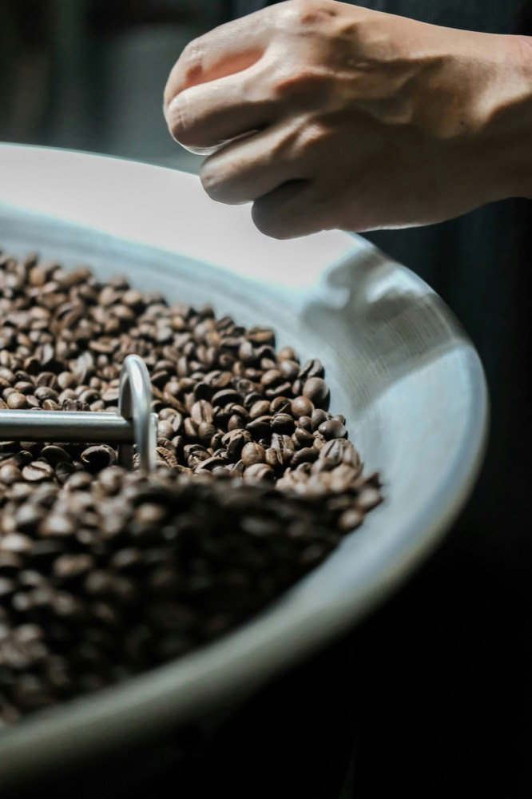
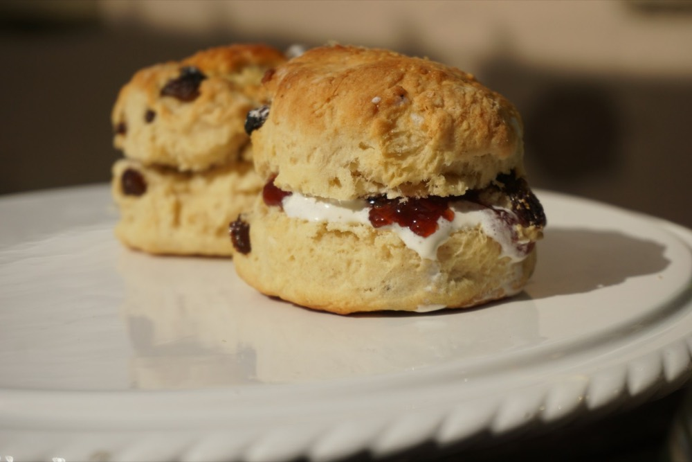

ひとりで落ち着ける場所、
ありますか？
少しだけ、ひとりになりたい朝。
チェーンのカフェはにぎやかで、
気になっていた個人のお店は、なんとなく入りにくい。
本を読んだり、ぼんやり窓の外を眺めたり。
そんな時間を過ごせる場所が、近くにあったら。
ゆっくりしていって、
いいんです。
木もれびコーヒーは、住宅街の中にある小さなカフェです。
「ひとりで来た人が、気がねなく長居できる場所」をつくりたくて、お店をはじめました。
窓際のカウンター席、自由に読める本棚、店内で焙煎するコーヒーの香り。
急がなくて大丈夫です。あなたのペースで過ごしてください。
こんなふうに、過ごせます
-

窓際のカウンター席で
木もれびが差しこむ6つのカウンター席。おひとりさまに人気の席です。
-

本棚の本を、1冊
小説、エッセイ、旅の本。店内の本は自由に読めます。お気に入りの1冊を持ってきても。
-

平日の朝は、モーニングで
9:00〜11:00は、コーヒーと焼き菓子のモーニングセットをご用意しています。
毎日のこと、ひとつずつ丁寧に

自家焙煎のコーヒー
生の豆を店内で焙煎し、焼きたての豆で淹れています。
深煎りから浅煎りまで、その日の気分に合わせてお選びください。

手作りの焼き菓子
スコーン、パウンドケーキ、クッキー。毎朝お店で焼いています。
コーヒーに合う、甘さ控えめの味です。
お客様の声
-
「仕事が休みの平日に、ひとりで来ています。窓際の席で本を読む時間が、いちばんの楽しみです。」
30代・会社員 -
「個人のお店は入りにくいと思っていましたが、店員さんの声かけがちょうどよくて、すぐに常連になりました。」
40代・近所にお住まいの方 -
「スコーンが好きで、テイクアウトもよく利用しています。」
30代・在宅で仕事をしている方
※ この作品はポートフォリオ用の架空のお店です。お客様の声も架空のものです。
店舗情報
※ 架空のお店のため、地図はサンプル表示（東京駅周辺）です
- 店名
- 木もれびコーヒー
- 住所
- 〒000-0000
〇〇県〇〇市木もれび町1-2-3
（架空の住所です） - アクセス
- 〇〇駅 南口から徒歩8分
- 営業時間
- 9:00〜18:00（ラストオーダー17:30）
- 定休日
- 火曜日
- 席数
- 14席（カウンター6席・テーブル8席）
- その他
- 全席禁煙／テイクアウトできます
今日の焼き菓子は、Instagramで
その日に焼いたお菓子や、臨時のお休みのお知らせをしています。
「今日は何があるかな」と、のぞいてみてください。
※ 架空のお店のため、Instagramのアカウントはありません
近くに来たら、
ひと息つきにどうぞ。
9:00〜18:00（火曜定休）。
おひとりでも、お気軽にお立ち寄りください。